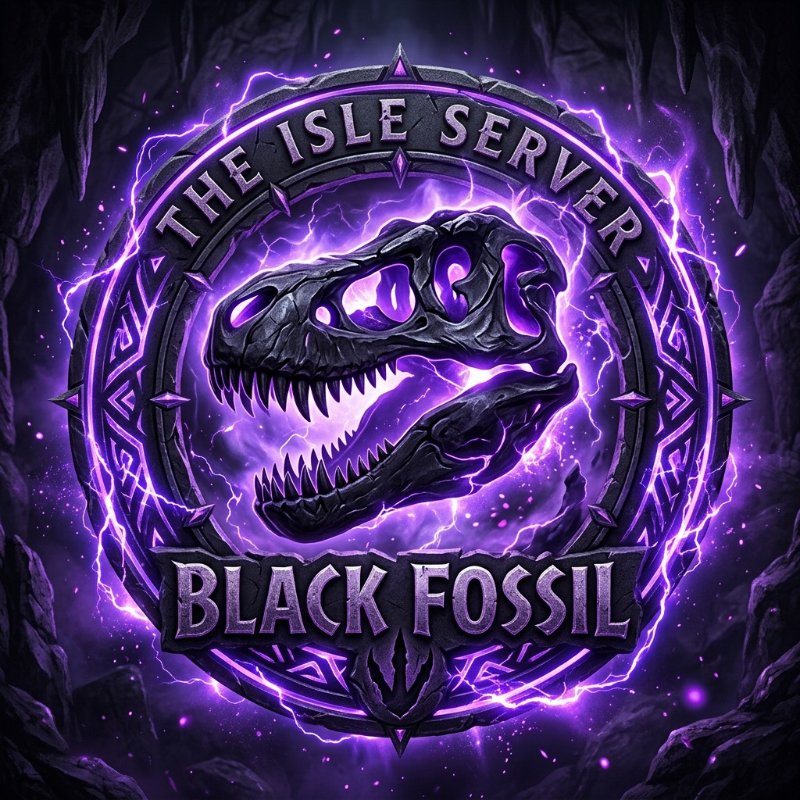

🎨 Edit-Mode aktiv — Panels ziehen, Position wird gespeichert Reset Fertig
…
Fossil
— Pkt.
Verbinde…
—
🔊 Reichweite: 10 m
Zone: —
🔧 Kalibrieren
📐 Zonen
📐 Zonen aufnehmen
Zone wählen → im Spiel die Form abfliegen → an jeder Ecke F6 drücken.
Reihenfolge = Umrandung. Dann speichern.
PVP
PVE
Keine Zone gewählt
＋ Punkt (F6)
↶
🗑
💾 Speichern (für alle)
🔧 Kalibrierung
Am besten deine eigene Position an 3-4 weit entfernten Orten:
hinstellen → 👤 dich wählen → auf der Karte dort klicken. Punkte weit verteilen,
keine Zonen-Ecken (liegen zu dicht).
0 Punkte gesetzt
Berechnen
Reset
Teleportieren?
✅ Teleportieren
Abbrechen
🗺️ Ansichten
🔥 Heatmap
🛡️ Sanctuary
🐾 Patrol
🧭 Migration
🎯 Steuerung
⌖ Auf mich zentrieren
↺ Ansicht zurücksetzen
🚩 Wegpunkt löschen
M schließen · Mausrad = Zoom · Ziehen = verschieben · Klick = Wegpunkt
⚙️ Einstellungen
🎙️ Voicechat-Kontrolle
Verbinden
🔇 Mikro aus
🔊 Ton an
Mikrofon-Modus
🔊 Offenes Mikro
⌨️ Push-to-Talk
🔇 Push-to-Mute
🎨 Layout
🎨 Edit-Mode (Panels verschieben)
Panels per Drag verschieben — Positionen werden lokal gespeichert.
⚙️ Voicechat-Einstellungen
🎤 Mikrofon (Eingabe)
Standard
🔊 Deine Sprechreichweite (andere hören dich so weit)
⬆️ Updates
🔄 Nach Updates suchen
Eine neue Version ist verfügbar.
Update herunterladen
⌨️ Hotkeys
Tasten zurücksetzen
⚡ Effekte
⚡ Blitz-Effekte: An
Schaltet alle Blitze/Leuchteffekte aus (z. B. für schwächere PCs).
v…
🛡️ Admin-Panel
Abmelden
Schließen
✕
🛡️ Admin-Panel
👤 Spieler-Verwaltung
⚡ Lightning Strike (Slay)
🎁 Beschenken
Ziel
👤 Einzelner User
👥 Rolle (alle Mitglieder)
🌐 Alle Online
🎁 Vergeben
🗺️ Karte, TP & AI
🔧 Karte kalibrieren (global)
🦖 AI-Dinos
🗺️ Auf Karte klicken zum Spawnen
▶️ Start
⏹️ Stop
🧹 Despawn
💀 Kill
🆘 PANIC
🛑 DLL aus
🦖 Dino-Limits
Max. erlaubte Anzahl pro Spezies. 0 = unbegrenzt. Sichtbar für alle (Overlay-Lexikon + Discord).
💾 Limits speichern
⚠️ Nicht auf dem BlackFossil-Server — verbinde dich im Spiel, um Karte & Proximity zu nutzen.
⬆️ Update verfügbar
🔴 Du bist NICHT im Voice-Chat — klicken zum Verbinden
Profil Dino Gruppe Lexikon Garage Markt Quests Karte Skin Settings Admin
Schließen
🎨 Skin Editor Wird in Kürze verfügbar sein.
Schließen 🚗 Garage Ein- und Ausparken deiner Dinos — kommt in Phase 4.
Schließen 🦖 Dino-Markt Dinos kaufen & verkaufen — kommt in Phase 4.
Schließen